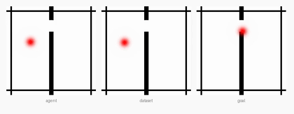
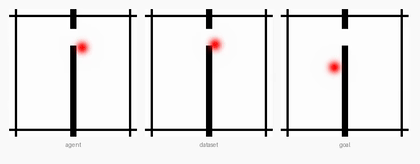
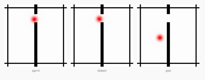
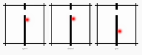

Reproducing the official LeWM (JEPA + SIGReg) Two-Room planning benchmark on Apple Silicon · June 3, 2026 · companion to pusht-baseline.html
Bottom line. Running the genuine le-wm/eval.py dataset-replay protocol
(50 episodes, seed 42, official CEM) against the released quentinll/lewm-tworooms checkpoint
on Apple Silicon (MPS) reproduces the paper's Two-Room result: 86.0% (43/50) — within ~1 point
of the paper's ~87 and close to an independent reporter's 90. This is the second
of the paper's four worlds we've reproduced (after PushT, 90%), and it required
no new fixes — the exact setup from PushT carried over verbatim.
Two-Room is a 2D navigation task: an agent moves between two rooms through a doorway to reach a goal position. Success = reaching the goal pose, over 50 dataset-sampled start/goal pairs at eval seed 42.
| Run | Env / device | Success | Eval wall-clock | Status |
|---|---|---|---|---|
| Paper (LeWM) | authors, CUDA | ~87 | — | reference |
| Reporter (YushenZuo, #62) | released ckpt, CUDA | 90 | — | independent |
| Ours | transformers 4.57.6 · MPS | 86.0 (43/50) | 121 s | reproduced |
Failures were episodes 1, 3, 7, 17, 24, 31, 43.
Actual rollouts written by eval.py (lewm_data/tworoom/env_*.mp4, re-encoded to GIF).
Each panel triplet shows current observation · replay · goal; the red agent navigates through the
doorway between the two rooms toward the goal position.




Same official planner and CEM config as PushT (300 samples × 30 iters, horizon 5), so timing matches.
| Steady-state | ~2 s |
| Smoke (1 plan, 2 envs) | 3.8 s |
| CEM config | 300 × 30, H=5 |
| Total wall-clock | 121 s |
| Batched plan (50 envs) | ~20–82 s |
| Device | Apple MPS |
The only differences from the PushT run were the config name, checkpoint, and dataset. Every fix carried over unchanged, confirming they're general to all LeWM checkpoints, not PushT-specific:
transformers<5 — same ViT key-rename issue (#68); checkpoint loads correctly under 4.57.6.hdf5plugin — required for the hdf5 dataset format to register (#76).eval.py — CUDA→device-aware (MPS); format="h5"→"hdf5".Schema difference handled by the config itself: Two-Room has no state column, so
tworoom.yaml caches [action, proprio] and sets goal from proprio/goal_proprio.
No MuJoCo — Two-Room is pure 2D (pygame), like PushT.
# environment already prepared from the PushT run:
# transformers==4.57.6, hdf5plugin, patched le-wm/eval.py
# dataset: tworoom.tar.zst (3.4 GB) -> tworoom.h5 (12 GB, 10,000 eps, 920,809 frames)
# from quentinll/lewm-tworooms · symlinked into $STABLEWM_HOME
# checkpoint: quentinll/lewm-tworooms weights.pt + config.json
cd le-wm
STABLEWM_HOME=.../lewm_data SWM_DEVICE=mps PYTHONPATH=. \
python eval.py --config-name=tworoom policy=tworoom/lewm \
solver.device=mps +cache_dir=null eval.num_eval=50
# → {'success_rate': 86.0, ...} in ~121 s
| Artifact | What it is |
|---|---|
tworoom-baseline.html | This report |
tworoom_report_assets/ep_*.gif | 4 reproduced episodes (3 success + 1 failure) |
lewm_data/tworoom/env_0..49.mp4 | All 50 reproduced episode videos |
lewm_data/tworoom/tworoom_results.txt | Official metrics + evaluation_time |
le-wm/eval_tworoom.log | Run log (86%) |
lewm_data/tworoom.h5 | Symlink → 12 GB dataset on external scratch |
lewm_data/checkpoints/tworoom/lewm/ | weights.pt+config.json symlinks |
| World | Sim | Paper | Ours (MPS) | Status |
|---|---|---|---|---|
| PushT | pymunk | 96.0 ± 2.83 | 90.0 | reproduced |
| Two-Room | pygame | ~87 | 86.0 | reproduced |
| Reacher | dm_control / MuJoCo | ~86 | — | gated: MuJoCo-on-Mac |
| OGBench-Cube | ogbench / MuJoCo | ~74 | — | gated: MuJoCo-on-Mac |
Reacher & Cube need MUJOCO_GL=glfw on macOS (EGL is Linux-only) — slated for a later
pass, with a possible upstream contribution.